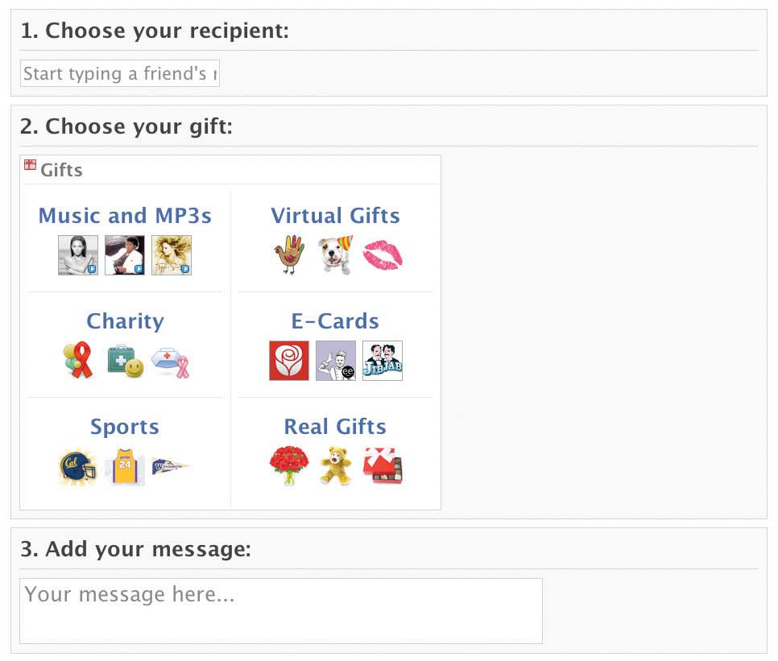

After studying this section you should be able to do the following:
If Facebook is going to continue to give away its services for free, it needs to make money somehow. Right now that means advertising. Fortunately for the firm, online advertising is hot. For years, online advertising has been the only major media category that has seen an increase in spending (see Chapter 8 "Google: Search, Online Advertising, and Beyond…"). And while 20 percent of media consumption happens online, the Internet attracts just 6 percent of advertising dollars, suggesting there’s plenty of growth still ahead.Bryant Urstadt, “The Business of Social Networks,” Technology Review, July/August 2008. Firms spend more advertising online than they do on radio ads, and the Internet will soon beat out spending on cable TV and magazine ads.Mark Sweeney, “Internet Ad Spending Will Overtake Television in 2009,” Guardian, May 19, 2008. But not all Internet advertising is created equal. And there are signs that social networking sites are struggling to find the right ad model.
In early 2008, Google founder Sergey Brin stated, “I don’t think we have the killer best way to advertise and monetize social networks yet.” Brin went on to state that social networking ad inventory as a whole was proving problematic and that the “monetization work we were doing there didn’t pan out as well as we had hoped.”“Everywhere and Nowhere,” Economist, March 19, 2008. When Google ad partner Fox Interactive Media (the News Corporation division that contains MySpace) announced that revenue would fall one hundred million dollars short of projections, News Corporation’s stock tumbled 5 percent, analysts downgraded the company, and the firm’s chief revenue officer was dismissed.Brian Stelter, “MySpace Might Have Friends, but It Wants Ad Money,” New York Times, June 16, 2008.
Why aren’t social networks having the success of Google and other sites? Problems advertising on these sites include content adjacencyConcern that an advertisement will run near offensive material, embarrassing an advertiser and/or degrading their products or brands., and user attention. The content adjacency problem refers to concern over where a firm’s advertisements will run. Look at all of the creepy titles in social networking news groups. Do advertisers really want their ads running alongside conversations that are racy, offensive, illegal, or that may even mock their products? This potential juxtaposition is a major problem with any site offering ads adjacent to free-form social media. Summing up industry wariness, one P&G manager said, “What in heaven’s name made you think you could monetize the real estate in which somebody is breaking up with their girlfriend?”B. Stone, “Facebook Aims to Extends Its Reach across Web,” New York Times, December 1, 2008. An IDC report suggests that it’s because of content adjacency that “brand advertisers largely consider user-generated content as low-quality, brand-unsafe inventory” for running ads.R. Stross, “Advertisers Face Hurdles on Social Networking Sites,” New York Times, December 14, 2008.
Now let’s look at the user attention problem.
In terms of revenue model, Facebook is radically different from Google and the hot-growth category of search advertising. Users of Google and other search sites are on a hunt—a task-oriented expedition to collect information that will drive a specific action. Search users want to learn something, buy something, research a problem, or get a question answered. To the extent that the hunt overlaps with ads, it works. Just searched on a medical term? Google will show you an ad from a drug company. Looking for a toy? You’ll see Google ads from eBay sellers and other online shops. Type in a vacation destination and you get a long list of ads from travel providers aggressively courting your spending. Even better, Google only charges text advertisers when a user clicks through. No clicks? The ad runs at no cost to the firm. From a return on investment perspective, this is extraordinarily efficient. How often do users click on Google ads? Enough for this to be the single most profitable activity among any Internet firm. In 2008, Google revenue totaled nearly twenty-two billion dollars. Profits exceeded $4.2 billion, almost all of this from pay-per-click ads (see Chapter 8 "Google: Search, Online Advertising, and Beyond…" for more details).
While users go to Google to hunt, they go to Facebook as if they were going on a hike—they have a rough idea of what they’ll encounter, but they’re there to explore and look around, enjoy the sights (or site). They’ve usually allocated time for fun and they don’t want to leave the terrain when they’re having conversations, looking at photos or videos, and checking out updates from friends.
These usage patterns are reflected in click-through rates. Google users click on ads around 2 percent of the time (and at a much higher rate when searching for product information). At Facebook, click-throughs are about 0.04 percent.Bryant Urstadt, “The Business of Social Networks,” Technology Review, July/August 2008. Rates quoted in this piece seem high, but a large discrepancy between site rates holds across reported data.
Most banner ads don’t charge per click, but rather via something called CPMCost per thousand impressions (the M representing the roman numeral for one thousand).—that’s cost per thousand impressionsEach time an ad is served to a user for viewing. (an impression being each time an ad appears on someone’s screen). The holy grail of Internet advertising is targeting. The more focused an audience, the more likely a firm is to attract advertisers willing to pay a higher CPM to reach those users. Rates vary widely. In 2008, MySpace lowered its banner ad rate from $3.25 CPM to less than two dollars. By contrast, TechTarget, a Web publisher focusing on technology professionals, is able to command CPM rates of one hundred dollars and above (an ad inventory that valuable helped the firm go public in 2007). Technology Review magazine boasts a CPM of seventy dollars. The social networking blog Mashable has CPM rates ranging between seven and thirty-three dollars. But Facebook ads go for much, much less. Lookery, a one-time ad network that bought ad space on Facebook in bulk, had been reselling inventory at a CPM of 7.5 cents (note that Facebook does offer advertisers pay-per-click as well as impression-based, or CPM, options). Even Facebook ads with a bit of targeting are poorly priced (Facebook’s Social Ads, which allow advertisers to target users according to location and age, have a floor price of fifteen cents CPM).Bryant Urstadt, “The Business of Social Networks,” Technology Review, July/August 2008; Jessi Hempel, “Finding Cracks in Facebook,” Fortune, May 13, 2008; and E. Schonfeld, “Are Facebook Ads Going to Zero? Lookery Lowers Its Guarantee to 7.5-cent CMPs,” TechCrunch, July 22, 2008.
Facebook and other social networks are still learning what works. Ad inventory displayed on high-traffic home pages have garnered big bucks for firms like Yahoo! With MySpace and Facebook offering advertisers greater audience reach than most network television programs, there’s little reason to suggest that chunks of this business won’t eventually flow to the social networks. But even more interesting is how Facebook and widget sites have begun to experiment with relatively new forms of advertising. Many feel that Facebook has a unique opportunity to get consumers to engage with their brand, and some initial experiments point where this may be heading.
Figure 7.2

The Disney Backlot area on Facebook contains contests, movie trailers, reviews, and upcoming releases. Users can also “become a fan,” and get access to advance screenings, premiere tickets, opportunities to meet the stars, visits to movie sets, and other freebies.
Many firms have been leveraging so-called engagement adsPromotion technique popular with social media that attempts to get consumers to interact with an ad, then shares that action with friends. by making their products part of the Facebook fun. COO Sheryl Sandberg discussed Ben and Jerry’s promotion for the ice cream chain’s free cone day event. To promote the upcoming event, Ben and Jerry’s initially contracted to make two hundred and fifty thousand “gift cones” available to Facebook users; they could click on little icons that would gift a cone icon to a friend, and that would show up in their profile. Within a couple of hours, customers had sent all two hundred and fifty thousand virtual cones. Delighted, Ben and Jerry’s bought another two hundred and fifty thousand cones. Within eleven hours, half a million people had sent cones, many making plans with Facebook friends to attend the real free cone day. The day of the Facebook promotion, Ben and Jerry’s Web site registered fifty-three million impressions, as users searched for store locations and wrote about their favorite flavors.Quentin Hardy, “Facebook Thinks Outside Boxes,” Forbes, May 28, 2008. The campaign dovetailed with everything Facebook was good at: it was viral, generating enthusiasm for a promotional event and even prompting scheduling.
In other promotions, Paramount Pictures gave away two hundred and fifty thousand virtual fedoras for “Indiana Jones and the Kingdom of the Crystal Skull.” They sold out within hours, with users rallying friends, family, and colleagues to see the movie. Honda gave away three quarters of a million hearts during Valentine’s Day 2009.S. Sandberg, “Sheryl Sandberg on Facebook’s Future,” BusinessWeek, April 8, 2009. The Dr. Pepper Snapple Group offered two hundred and fifty thousand virtual Sunkist sodas, which earned the firm one hundred thirty million brand impressions in twenty-two hours. Says Sunkist’s brand manager, “A Super Bowl ad, if you compare it, would have generated somewhere between six to seven million.”Elaine Wong, “Ben & Jerry’s, Sunkist, Indy Jones Unwrap Facebook’s ‘Gift of Gab,’” Brandweek, June 1, 2008.
Of course, even with this business, Facebook may find that it competes with widget makers. Slide also offers wacky advertising programs through its own Facebook apps (the firm sits atop the most popular application developer rankings). Fox Searchlight went to Slide to allow friends to throw orange Tic Tacs at each other as part of a promotion for the movie “Juno.” Coke used Slide to distribute virtual Vitamin Water. By some estimates, in 2009, Facebook app developers took in well over half a billion dollars—exceeding Facebook’s own haul.M. Learmonth and A. Klaasen, “Facebook Apps Will Make More Money Than Facebook in 2009,” Silicon Alley Insider, May 18, 2009. Unlike Apple’s app store (where much of developer-earned revenue comes from selling apps), the vast majority of Facebook apps are free and ad-supported. That means Facebook and its app providers are in competition to monetize Facebook users, and both are running at a finite pot of recession-constrained advertising dollars.
While these efforts might be quirky and fun, are they even effective? Some of these programs are considered successes; others, not so much. Jupiter Research surveyed marketers trying to create a viral impact online and found that only about 15 percent of these efforts actually caught on with consumers.Matt Cowan, “Marketers Struggle to Get Social,” Reuters, June 19, 2008, http://www.reuters.com/news/video?videoId=84894. While the Ben and Jerry’s gift cones were used up quickly, a visit to Facebook in the weeks after this campaign saw CareerBuilder, Wide Eye Caffeinated Spirits, and Coors Light icons lingering days after their first appearance. Brands seeking to deploy their own applications in Facebook have also struggled. New Media Age reported that applications rolled out by top brands such as MTV, Warner Brothers, and Woolworths were found to have as little as five daily users. Congestion may be setting in for all but the most innovative applications, as standing out in a crowd of over twenty-three thousand applications becomes increasingly difficult.L. Goldie, “For Facebook Success Brands Must Stand Out” New Media Age, May 1, 2008.
To its credit, consumer products giant P&G has been relentlessly experimenting with leveraging social networks for brand engagement, but the results show what a tough slog this can be. The firm did garner fourteen thousand Facebook “fans” for its Crest Whitestrips product, but those fans were earned while giving away free movie tickets and other promos. The New York Times quipped that with those kinds of incentives, “even a hemorrhoid cream” could have attracted a similar group of “fans,” and when the giveaways stopped, thousands promptly “unfanned” Whitestrips. Results for Proctor and Gamble’s “2X Ultra Tide” fan page were also pretty grim. P&G tried offbeat appeals for customer-brand bonding, including asking Facebookers to post “their favorite places to enjoy stain-making moments.” But a check eleven months after launch had garnered just eighteen submissions, two from P&G, two from staffers at spoof news site The Onion, and a bunch of short posts such as “Tidealicious!”R. Stross, “Advertisers Face Hurdles on Social Networking Sites,” New York Times, December 14, 2008.
Efforts around engagement opportunities like events (Ben and Jerry’s) or products consumer are anxious to identify themselves with (a band or a movie) may have more success than trying to promote consumer goods that otherwise offer little allegiance, but efforts are so new that metrics are scarce, impact is tough to gauge, and best practices are still unclear.
Figure 7.3
Facebook sells “gifts,” icons that show up on friends’ profiles, for one dollar each.